This specification describes Shapes Constraint Language (SHACL) User Interfaces.
This specification is published by the Data Shapes Working Group.
Content.
Content.
Content.
Terminology used throughout this specification is taken from several sources:
The SHACL & RDF terms include: binding , blank node , conformance , constraint , constraint component , data graph , datatype , failure , focus node , RDF graph , ill-formed , IRI , literal , local name , member , node , node shape , object , parameter , pre-binding , predicate , property path , property shape , RDF term , SHACL instance , SHACL list , SHACL subclass , shape , shapes graph , solution , subject , target , triple , validation , validation report , validation result , validator , value , value node .
sh:path, the latter of which is commonly used to label form elements.
The process includes language resolution and considers labeling-related annotations from the
shapes graph, data graph, application environment, and user preferences, to determine the best label for UI presentation.
Within this specification, the following namespace prefix definitions are used:
| Prefix | Namespace |
|---|---|
rdf: |
http://www.w3.org/1999/02/22-rdf-syntax-ns# |
rdfs: |
http://www.w3.org/2000/01/rdf-schema# |
sh: |
http://www.w3.org/ns/shacl# |
shui: |
http://www.w3.org/ns/shacl-ui# |
xsd: |
http://www.w3.org/2001/XMLSchema# |
ex: |
http://example.com/ns# |
dct: |
http://purl.org/dc/terms/ |
Within this specification, the following JSON-LD context is used:
{
"@context": {
"rdf": "http://www.w3.org/1999/02/22-rdf-syntax-ns#",
"rdfs": "http://www.w3.org/2000/01/rdf-schema#",
"sh": "http://www.w3.org/ns/shacl#",
"shui": "http://www.w3.org/ns/shacl-ui#",
"xsd": "http://www.w3.org/2001/XMLSchema#",
"ex": "http://example.com/ns#",
"dct": "http://purl.org/dc/terms/"
}
}
Note that the URI of the graph defining the SHACL vocabulary itself is
equivalent to the namespace above, i.e., it includes the
#. References to the SHACL vocabulary, e.g., via
owl:imports should include the #.
Throughout the specification, color-coded boxes containing RDF graphs in Turtle and JSON-LD will appear. The color and title of a box indicate whether it is a Shapes graph, a Data graph, or something else. The Turtle specification fragments use the prefix bindings given above. The JSON-LD specification fragments use the context given above. Only the Turtle specifications will have parts highlighted.
// This box represents an input shapes graph
{
"@id": "ex:s",
"ex:p": {
"@id": "ex:o"
}
}
// This box represents an input data graph
{
"@graph": [
{
"@id": "ex:Alice",
"@type": "ex:Person"
},
{
"@id": "ex:Bob",
"@type": "ex:Person"
}
]
}
// This box represents an output results graph
Grey boxes such as this include syntax rules that apply to the shapes graph.
true denotes the RDF term
"true"^^xsd:boolean. false denotes the RDF
term "false"^^xsd:boolean.
TODO
At the time of writing, RDF 1.2 is a Working Draft. This section will be reviewed and updated when RDF 1.2 becomes a W3C Recommendation.
SHACL Renderers implementing this specification MUST support RDF 1.1 and SHOULD support RDF 1.2. When RDF 1.2 is supported, and unless stated otherwise in this document, implementations SHOULD prefer RDF 1.2 syntax and data model features over their RDF 1.1 counterparts.
The following sub-sections enumerate the currently defined instances of shui:Editor from the SHACL UI namespace.
Property shapes can explicitly specify the preferred editor for its values using shui:editor.
If no such value has been specified, the system should pick a suitable default viewer based on the
scoring system outlined for each widget.
The following sub-sections enumerate the currently defined instances of shui:Viewer from the SHACL UI namespace.
A property shape can have an explicitly specified preferred viewer for its values in shui:viewer.
If no such value has been specified, the system should pick a suitable default viewer based on the
scoring system outlined for each widget.
Most viewers render a single RDF value on the screen, typically as a single widget.
Form editors offer buttons to edit individual values and to add or delete values.
However, some viewers need to take more complete control over how multiple values of a property at a focus node are rendered.
The only example of such a viewer in SHACL UI is shui:ValueTableViewer, which displays
all values of a property as an HTML table.
In such cases, the notions of generic add and delete buttons do not apply.
Such viewers are called Multi Viewers and are declared instances of shui:MultiViewer instead of shui:SingleViewer.
The equivalent classes for editors are shui:MultiEditor and shui:SingleEditor.
Content.
SHACL Property Paths can be used to render a SHACL shape as a user interface. Property paths define how data values are accessed or modified relative to a focus node.
The following subsections outline the scenarios in which SHACL UI implementations are expected to support different kinds of property paths for viewing and editing operations.
In view mode, property paths are used to retrieve and display data values associated with a shape. A SHACL UI implementation must provide mechanisms to resolve these paths for visualization.
SHACL UI implementations MUST support both predicate paths and inverse paths in view mode. This ensures that values reachable via simple forward or inverse relationships can be displayed to the user.
The following example illustrates how predicate and inverse paths are used in view mode to access and display values, either directly from the focus node or through incoming relationships from other nodes.
SHACL UI implementations SHOULD support complex property paths in view mode. Complex paths include sequence paths, alternative paths, zero-or-more paths, one-or-more paths, and zero-or-one paths as defined in SHACL Core.
Support for complex paths is recommended, but can be left out in cases where the implementation aims to provide symmetry between view and edit modes, and complex paths are not supported in edit mode.
The following examples illustrate a sequence path and an alternative path, both of which may be used for richer data traversal in view mode.
In edit mode, property paths determine how changes to data and the creation of new data are applied through the user interface.
SHACL UI implementations MUST support predicate paths and inverse paths in edit mode. This allows users to modify data linked by simple properties or inverse properties.
The following example illustrates how predicate and inverse paths can be used in edit mode to modify a person’s name and manage their membership in departments.
SHACL UI implementations SHOULD support alternative paths in edit mode. This enables editing where a shape can constrain multiple potential properties, and the UI can allow users to choose which alternative to use when entering or modifying data.
When editing existing or newly created statements, the UI SHOULD provide a mechanism to update the
predicate to one of the enumerated paths in the sh:alternativePath list, but only if
those paths are either predicate paths or inverse paths. This restriction is necessary
because the object of sh:alternativePath is a SHACL list that may contain any valid
property path expression, including complex path types that are not generally feasible to edit
directly through a user interface.
Although redundant, SHACL permits nesting of sh:alternativePath expressions.
Such nesting simply flattens to a single list of predicate or inverse paths and does not alter the
effective set of alternatives available for editing.
The following example illustrates how an alternative path can be used in edit mode to allow a book's
title to be provided through either dct:title or rdfs:label.
SHACL UI implementations MAY support the other complex paths (i.e., sequence paths, zero-or-more paths, one-or-more paths, and zero-or-one paths) in edit mode.
Implementers are encouraged to support these when their use cases require advanced data navigation or editing patterns, but such support is not mandatory as the complexity of editing through these paths may not be feasible in all user interface contexts.
Supporting complex property paths in edit mode introduces challenges related to ambiguity and the generation of intermediate data structures. Even when a path is used for view-only purposes, implementations must ensure that restrictions are in place to prevent ambiguous traversal results. SHACL property paths allow navigation across multiple steps in a graph, which can lead to situations where a single value is reachable through multiple distinct paths.
The following sub-sections enumerate the currently built-in instances of shui:Editor from the
SHACL UI namespace.
Score:
Rendering:
An auto-complete field to enter the label of instances of the class specified for the property.
For example, if the sh:class of the property is ex:Country and the user starts
typing "Nig", then "Niger" and "Nigeria" would show up as possible choices.
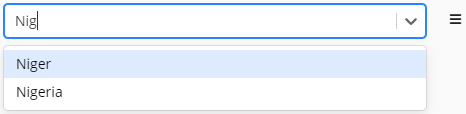
ex:Person-bornIn a sh:PropertyShape ; sh:path ex:bornIn ; sh:class ex:Country ; ...
Implementations may want to also support the combination of sh:class with sh:node
constraints to further narrow the set of valid values.
In this case, the component would filter out any instances of the class that do not conform to the specified node shape.
In the following example, the auto-complete would only show countries that have true as their value
for ex:sovereign.
ex:Person-bornIn a sh:PropertyShape ; sh:path ex:bornIn ; sh:class ex:Country ; sh:node [ sh:property [ sh:path ex:sovereign ; sh:hasValue true ; ] ] ; ...
Score:
Rendering: A read-only editor that displays the blank node, similar to shui:BlankNodeViewer, yet allows the surrounding user interface to at least provide a delete button.
Score:
xsd:boolean literals.sh:datatype constraint.null for properties allowing literals without specifying a particular datatype.
Rendering:
A select box with values true and false.
Also displays the current value (such as "1"^^xsd:boolean), but only allows to switch to true or false.
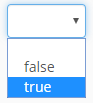
ex:Person-married a sh:PropertyShape ; sh:path ex:married ; sh:datatype xsd:boolean ; ...
Score:
xsd:date literals.sh:datatype xsd:date.Rendering: A calendar-like date picker.
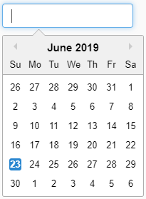
ex:Person-dateOfBirth a sh:PropertyShape ; sh:path ex:dateOfBirth ; sh:datatype xsd:date ; ...
Score:
xsd:dateTime literals.sh:datatype xsd:dateTime.Rendering: A calendar-like date picker including a time selector.
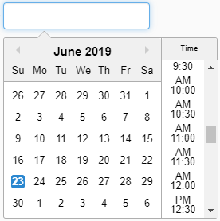
ex:Customer-lastVisitTime a sh:PropertyShape ; sh:path ex:lastVisitTime ; sh:datatype xsd:dateTime ; ...
Score:
null for non-literals, i.e., it can be selected manually via shui:editor.
Rendering:
Typically rendering as a nested form, using the properties defined by the sh:node or sh:class (in that order)
of the property as fields.
Alternative renderings are possible, such as opening the resource in a separate dialog.
This is particularly useful for some types of blank nodes that only make sense to be edited in the context of their parent resource.
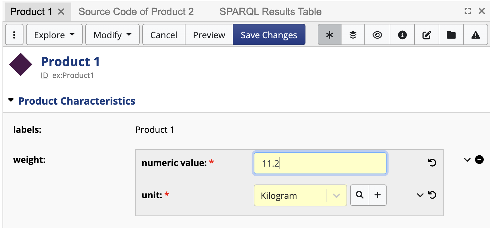
ex:Product a owl:Class ; a sh:NodeShape ; rdfs:label "Product" ; rdfs:subClassOf owl:Thing ; sh:property ex:Product-weight . ex:Product-weight a sh:PropertyShape ; sh:path ex:weight ; shui:editor shui:DetailsEditor ; shui:viewer shui:DetailsViewer ; sh:description "A blank node with a numeric field and a unit which is one of the QUDT mass units." ; sh:maxCount 1 ; sh:name "weight" ; sh:node ex:ValueWithWeight ; sh:nodeKind sh:BlankNode . ex:ValueWithWeight a sh:NodeShape ; rdfs:label "Value with weight" ; sh:property ex:ValueWithWeight-numericValue ; sh:property ex:ValueWithWeight-unit . ex:ValueWithWeight-numericValue a sh:PropertyShape ; sh:path ex:numericValue ; sh:datatype xsd:decimal ; sh:maxCount 1 ; sh:minCount 1 ; sh:name "numeric value" . ex:ValueWithWeight-unit a sh:PropertyShape ; sh:path ex:unit ; sh:class <http://qudt.org/schema/qudt/Unit> ; sh:maxCount 1 ; sh:minCount 1 ; sh:name "unit" ; sh:node [ rdfs:label "Permissible values must have quantity kind Mass." ; sh:property [ sh:path <http://qudt.org/schema/qudt/hasQuantityKind> ; sh:hasValue <http://qudt.org/vocab/quantitykind/Mass> ; ] ; ] .
This widget requires that the surrounding property (ex:weight, above) declares sh:nodeKind sh:BlankNode
and also has a sh:node constraint that points at a node shape that declares the properties that shall be editable.
Score:
sh:in constraint for the same property at the current focus node.
Rendering:
A drop-down editor for enum fields (based on the sh:in list, in that order).
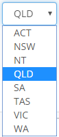
ex:AustralianAddressShape-addressRegion a sh:PropertyShape ; sh:path schema:addressRegion ; sh:in ( "ACT" "NSW" "NT" "QLD" "SA" "TAS" "VIC" "WA" ) ; ...
Score:
null if there exists a sh:class for the property.
Rendering:
A drop-down editor for all instances of the target class (based on sh:class of the property).
Typically only used for classes that have few instances.
ex:Person-homeCountry a sh:PropertyShape ; sh:path ex:homeCountry ; sh:class ex:Country ; shui:editor shui:InstancesSelectEditor ; ...
Score:
rdf:HTML literals.
Rendering:
A rich text editor to enter the lexical value of a literal and a drop-down to select language.
The selected language is stored in the HTML lang attribute of the root node in the HTML DOM tree.
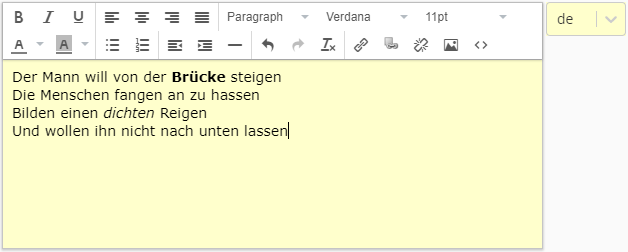
ex:Concept-definition a sh:PropertyShape ; sh:path skos:definition ; sh:datatype rdf:HTML ; ...
Score:
null, i.e., this should be selected explicitly through a shui:editor statement.
However, this widget is typically only used if the property has a
dash:rootClass
constraint, or (at minimum) only allows classes as values.
Rendering:
This can be an auto-complete widget to select a class, a class hierarchy widget, or a combination thereof.
The permissible values are a given class or its subclasses, defaulting to rdfs:Resource.
This is typically used with dash:rootClass to allow the user to select a subclass of the given root class.
ex:Drug-impactedCell a sh:PropertyShape ; sh:path ex:impactedCell ; dash:rootClass obo:CL_0000000 ; shui:editor shui:SubClassEditor ; ...
Score:
sh:singleLine true.xsd:string literal and sh:singleLine false.xsd:string literal.xsd:string among the permissible datatypes.null if the property has a custom datatype (not from xsd or rdf namespaces but for example geo:wktLiteral).Rendering: A multi-line text area to enter the value of a literal.
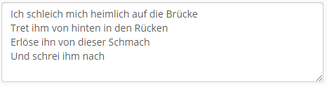
ex:Country-description a sh:PropertyShape ; sh:path ex:description ; sh:datatype xsd:string ; sh:singleLine false ; ...
Score:
sh:singleLine true.rdf:langString literal and sh:singleLine false.rdf:langString literal or the property permits such values.Rendering: A multi-line text area to enter the value of a literal and a drop-down to select a language.
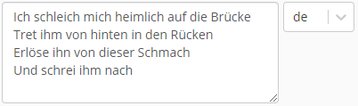
ex:Country-description a sh:PropertyShape ; sh:path ex:description ; sh:datatype rdf:langString ; sh:singleLine false ; ...
Score:
rdf:langString nor xsd:boolean.Rendering: An input field to enter the value of a literal, without the ability to change language or datatype.
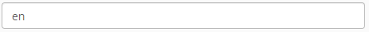
ex:Country-code a sh:PropertyShape ; sh:path ex:code ; sh:datatype xsd:string ; ...
Score:
rdf:langString literal or the property permits either rdf:langString or xsd:string.sh:singleLine false and permits rdf:langString values.
Rendering:
A single-line input field to enter the value of a literal and a drop-down to select language,
which is mandatory unless xsd:string is among the permissible datatypes.
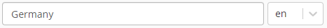
ex:Concept-prefLabel a sh:PropertyShape ; sh:path skos:prefLabel ; sh:datatype rdf:langString ; ...
Score:
sh:nodeKind sh:IRI and no sh:class constraint.null if the value is an IRI node.
Rendering:
An input field to enter the URI of a resource, e.g., as value of rdfs:seeAlso or to enter the URL of an image on the web.
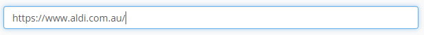
ex:Thing-seeAlso a sh:PropertyShape ; sh:path rdfs:seeAlso ; sh:nodeKind sh:IRI ; shui:editor shui:URIEditor ; ...
The following sub-sections enumerate the currently built-in instances of shui:Viewer from the SHACL UI namespace.
Score:
Rendering: A human-readable label of the blank node. For example, if the blank node is an OWL restriction, then Manchester Syntax could be used. If the blank node is a SPIN RDF expression, then a SPARQL string could be produced. This rendering may include hyperlinks to other resources that can be reached from the blank node.
Score:
null for IRIs and blank nodes.
Rendering:
Shows the details of the value using its default view shape or the shape specified using sh:node,
as a nested form-like display.
An example of this can be found in the Nested Forms section.
Score:
rdf:HTML.
Rendering:
The literal parsed into HTML DOM elements.
Hyperlinks in the HTML may get redirected to select resources within the same application.
Also displays the language if the HTML has a lang attribute on its root DOM element.
Score:
xsd:anyURI.null for xsd:string literals.Rendering: A clickable hyperlink to the specified URI/URL.
Score:
50 for IRI nodes or literals that have a case-insensitive recognized image ending such as
.png, .jpg, .jpeg, .gif, or .svg.
Rendering:
The image at the given URL, using <img> in HTML.
Score:
Rendering:
As a hyperlink to that URI based on the display label of the resource.
The display label is typically based on the most suitable rdfs:label or
skos:prefLabel for the current user, based on their language preferences.
Also includes other ways of interacting with the URI, such as opening a nested summary display.
Score:
rdf:langString.Rendering: As the text plus a language indicator (flag or language tag).
Score:
Rendering: The lexical form of the value.
Score:
Rendering: As a hyperlink to that URI. Also includes other ways of interacting with the URI, such as opening a nested summary display.
This is a Multi Viewer.
Score:
null, i.e., this should be selected explicitly through a shui:editor statement.
Rendering:
All values of the property at the focus node are rendered into a single (HTML) table that can be scrolled
and paged independently of the rest of the form.
Each value becomes one row.
The columns of the table are derived from the node shape specified using sh:node for the property,
in the order specified using sh:order.
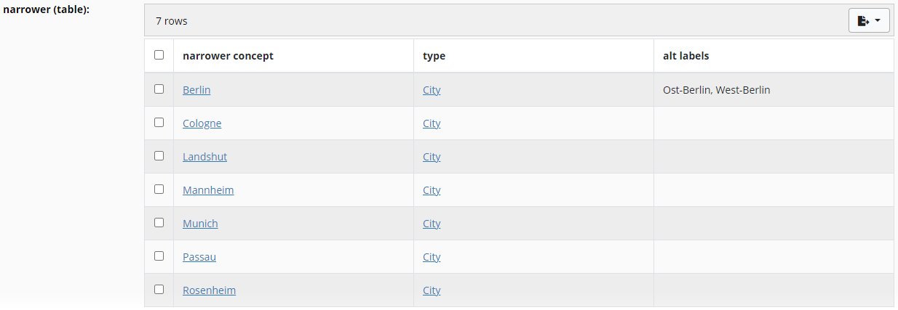
In this example, we have used a sh:values rule to infer the values of the first column.
In this case, the values are simply pointing back to the focus node of each row, using sh:this.
Note that dash:applicableToClass or sh:targetClass are needed to get this inference correctly.
skos:Concept
sh:property ex:Concept-broader-inverse .
ex:Concept-broader-inverse
a sh:PropertyShape ;
sh:path [ sh:inversePath skos:broader ] ;
sh:group skos:HierarchicalRelationships ;
sh:name "narrower (table)" ;
shui:viewer shui:ValueTableViewer ;
sh:node ex:ConceptTableShape .
ex:ConceptTableShape
a sh:NodeShape ;
dash:applicableToClass skos:Concept ;
rdfs:comment "A node shape defining the columns for a shui:ValueTableViewer." ;
rdfs:label "Concept table shape" ;
sh:property ex:ConceptTableShape-self ;
sh:property ex:ConceptTableShape-type ;
sh:property ex:ConceptTableShape-altLabel .
ex:ConceptTableShape-self
a sh:PropertyShape ;
sh:path ex:self ;
sh:description "This column is used to render the (narrower) concept itself." ;
sh:name "narrower concept" ;
sh:nodeKind sh:IRI ;
sh:order "0"^^xsd:decimal ;
sh:values sh:this .
ex:ConceptTableShape-type
a sh:PropertyShape ;
sh:path rdf:type ;
sh:description "The second column shows the type of each value." ;
sh:name "type" ;
sh:nodeKind sh:IRI ;
sh:order "1"^^xsd:decimal .
ex:ConceptTableShape-altLabel
a sh:PropertyShape ;
sh:path skos:altLabel ;
sh:description "The third column shows the alternative labels." ;
sh:name "alt labels" ;
sh:or dash:StringOrLangString ;
sh:order "2"^^xsd:decimal .
RDF resources commonly use properties to specify labels, descriptions, and other information needed for rendering, which user-interface engines depend on to render structured content. However, the vocabularies defining these properties vary across domains and communities. To ensure consistent interpretation, property shapes can be annotated with explicit roles for elements such as labels, descriptions, and other rendering properties.
This section introduces Property Roles for annotating SHACL property shapes, along with several built-in property roles defined in the SHUI namespace.
Property Roles are defined in the SHUI namespace and define the class shui:PropertyRole and the property shui:propertyRole.
Property roles can be annotated on property shapes by using the shui:propertyRole predicate and linking directly to a property role instance.
SHACL renderers may use such direct annotations to drive the way specific user-interface elements are displayed.
It is possible but not recommended to assign the same property role to multiple property shapes that apply to the same focus node using the direct role annotation form. When this is done, the resulting behavior is undefined.
The example below illustrates the common case where a property shape is directly annotated with shui:LabelRole. This informs user-interfaces that the shape's value nodes represent human-readable labels for resources.
When multiple predicates serve the same role in the data but require a defined precedence, the qualified role annotation should be used.
For property shapes annotated with the same role, user interfaces should prefer the shape with the smallest sh:order value. If multiple shapes
share the same role, they must be sorted and processed in ascending order of their sh:order values. In addition, any property shape
using a qualified role annotation is always preferred over a shape using a direct, unqualified role annotation.
The qualified role annotation can also be expressed using triple annotations. SHACL Renderers that support RDF 1.2 should support the triple annotation syntax in addition to the RDF 1.1-compatible qualified role annotation syntax.
The following sections define the instances of shui:PropertyRole in the SHUI namespace. These property roles MUST be supported
by SHACL Renderers. Additional property roles may be defined in other namespaces.
The shui:LabelRole is used to identify properties whose values serve as human-readable display labels.
Common examples of display label predicates include rdfs:label, skos:prefLabel, and schema:name.
The class of roles that a property shape may take with respect to its focus nodes. It is not required, but recommended, that roles
defined in other namespaces subclass shui:PropertyRole.
The property used to annotate property shapes with roles. Its value is expected to be either an instance of shui:PropertyRole or a
resource that itself declares a shui:propertyRole and an associated sh:order value.
TODO
TODO
TODO
Many people contributed to this document, including members of the RDF Data Shapes Working Group.
asdf